Guía ilustrada por módulo · Capturas reales del sistema Junio 2026
Contenido
Acceso y Login — entrar al sistema
MOS Home — lanzador central de módulos
Dashboard de Producción — tableros y gestión de órdenes
Surtido / Vista Operador — tickets de surtido en piso
Control de Calidad (QC) — inspecciones y hallazgos
Módulo de Arte — productividad y trabajo de arte
Registro de Envíos — salidas y evidencia
Packing List — listas de empaque y conteo
Registros — capturas de producción y neck
Smart Agenda — calendario y eventos
AI Insights — análisis inteligente
CEO Dashboard (MOS-ATLAS) — KPIs ejecutivos
Usuarios — cuentas, roles y permisos
Operadores — directorio de operadores
Automatizaciones — reglas automáticas
Activity Log — historia completa de una orden
Reportes Programados — reporte diario automático
Backup Center — respaldos y archivo
Cómo se navega: tras iniciar sesión llegas al Dashboard (o a MOS Home, el lanzador de módulos). La barra lateral izquierda lista los tableros y herramientas. Arriba a la derecha tienes buscar órdenes, tema claro/oscuro, idioma (ES/EN), notificaciones y tu usuario.
Nota: este manual cubre únicamente el CRM de producción. El módulo WMS (almacén) se documenta en su propio manual.
Todos
1 · Acceso y Login
Punto de entrada al sistema. Tras iniciar sesión, MOS te lleva automáticamente al módulo principal según tu rol.
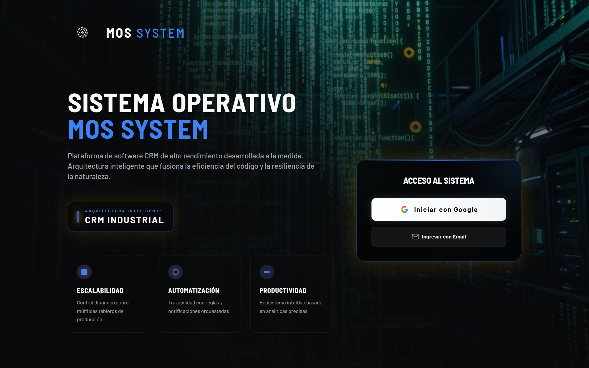
Cómo entrar
Iniciar con Google (cuenta corporativa, OAuth).
Ingresar con Email: correo + contraseña.
¿Olvidaste tu contraseña? envía un enlace de recuperación a tu correo.
Todos
2 · MOS Home (Hub)
Lanzador central con tarjetas de cada módulo, agrupadas por categoría.
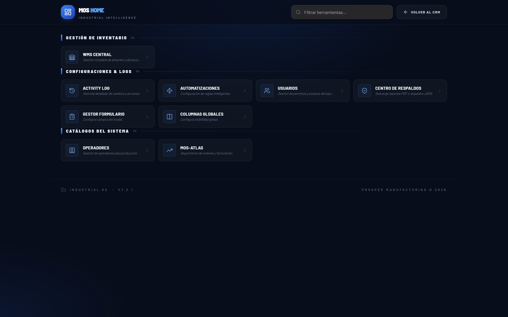
¿Para qué sirve?
Acceder rápido a cualquier módulo desde un solo lugar; las tarjetas se filtran según tu rol.
Buscador "Filtrar herramientas…" y botón Volver al CRM para regresar al Dashboard.
Secciones
Configuraciones & Logs: Activity Log, Automatizaciones, Usuarios, Centro de Respaldos, Gestor de Formulario, Columnas Globales.
Catálogos del Sistema: Operadores, Mos-atlas (CEO Dashboard).
Admin · CEO · Producción
3 · Dashboard de Producción (CRM)
El corazón del sistema: gestión de órdenes por tableros, con barra lateral de navegación y múltiples vistas.
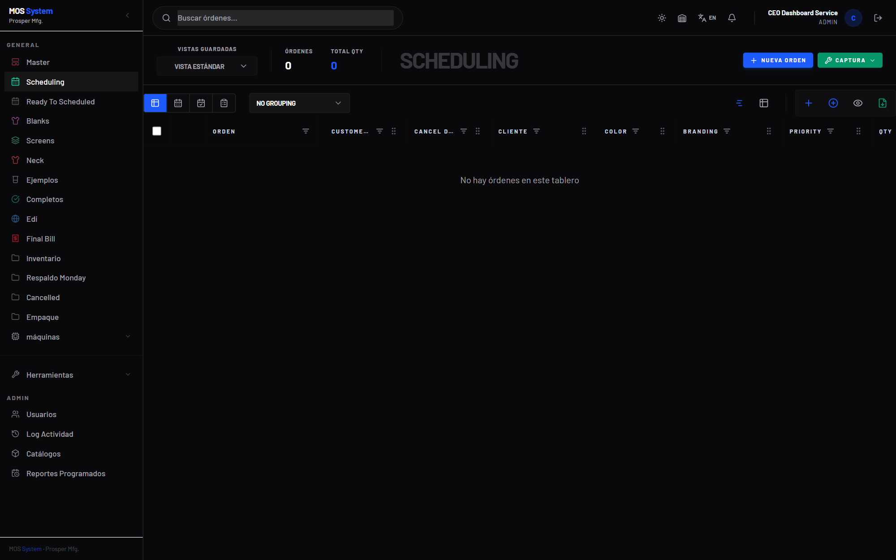
Barra lateral
Tableros (General): Master, Scheduling, Ready To Scheduled, Blanks, Screens, Neck, Ejemplos, Completos, Edi, Final Bill, Inventario, Respaldo Monday, Cancelled, Empaque y máquinas (colapsable, un tablero por máquina).
Historial de capturas de producción y de corte de neck, con filtros y exportación.
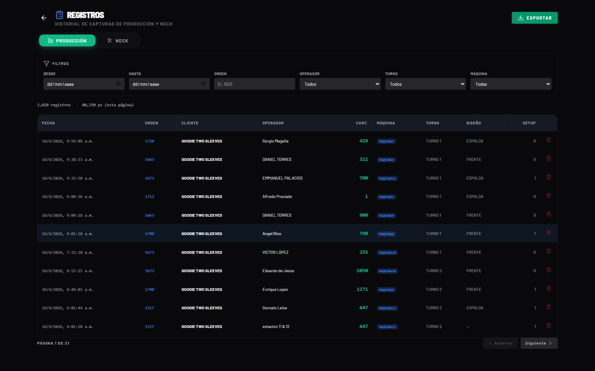
Utilidades
Pestañas Producción / Neck.
Filtros: Desde · Hasta · Orden · Operador · Turno · Máquina.
Tabla: Fecha, Orden, Cliente, Operador, Cant., Máquina, Turno, Diseño, Setup — con totales por página, paginación y botón Exportar.
Todos
10 · Smart Agenda
Calendario de eventos y turnos, con integración a Google Calendar.
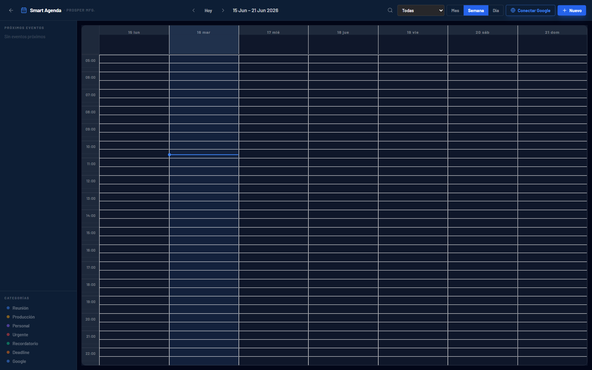
Utilidades
Vistas Mes / Semana / Día y navegación Hoy ◀ ▶.
Próximos eventos en el panel izquierdo.
Categorías por color: Reunión, Producción, Personal, Urgente, Recordatorio, Deadline, Google.
Conectar Google y botón + Nuevo evento.
Admin
11 · AI Insights
Motor de análisis inteligente de rendimiento, cuellos de botella y métricas de usuarios.
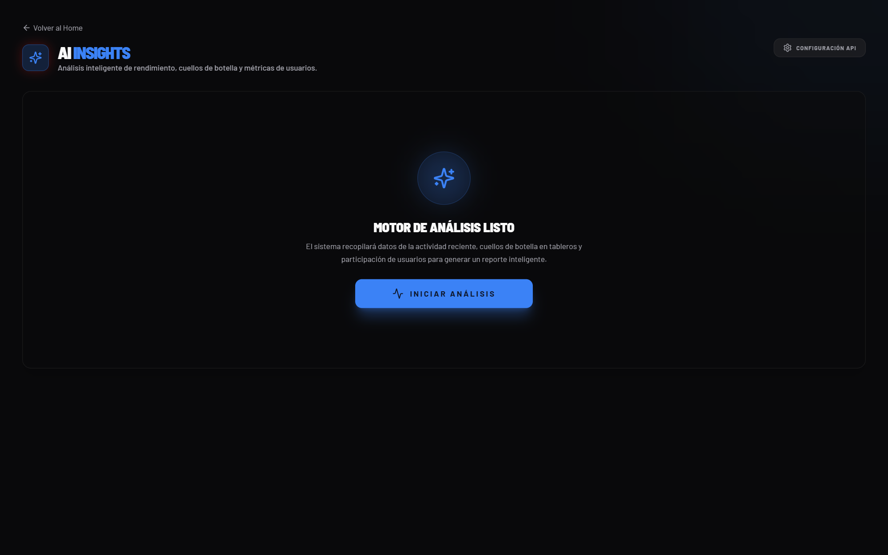
Utilidades
Iniciar análisis: recopila la actividad reciente, los cuellos de botella en tableros y la participación de usuarios para generar un reporte.
Configuración API (esquina superior derecha).
Admin · CEO · Supersu
12 · CEO Dashboard (MOS-ATLAS)
Tablero ejecutivo ("Executive Insights") con KPIs y gráficas de alto nivel.
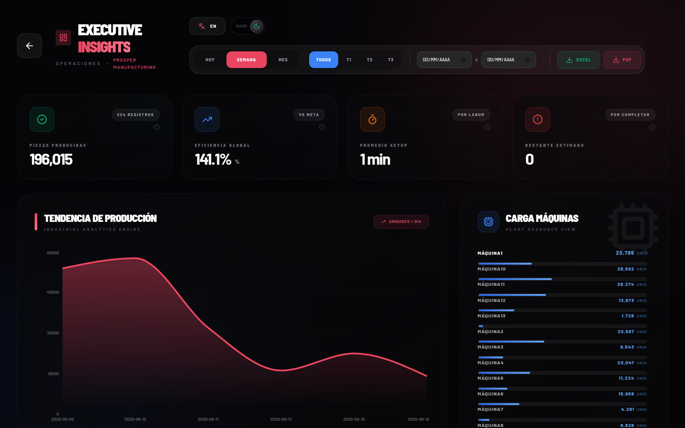
Indicadores
KPIs: Piezas Producidas, Eficiencia Global (%), Producción neto, Recientes.
Gráficas: Tendencia de producción (área) y Carga de máquinas (barras por máquina).
Utilidades
Filtros por periodo (Hoy / Semana / Mes / personalizado) y por turno.
Exportar / PDF.
Admin
13 · Usuarios
Control de accesos, roles y permisos del equipo.
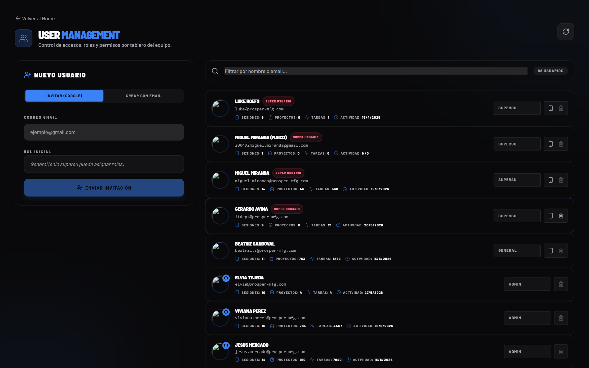
Nuevo usuario
Invitar usuario o Crear con email.
Captura el correo y el rol inicial.
Enviar invitación.
Lista de usuarios
Nombre, correo, rol (Superadmin / Admin / General), permisos por tablero y acciones.
Buscador por nombre / email.
Admin
14 · Operadores
Directorio de operadores (recursos humanos para máquinas).
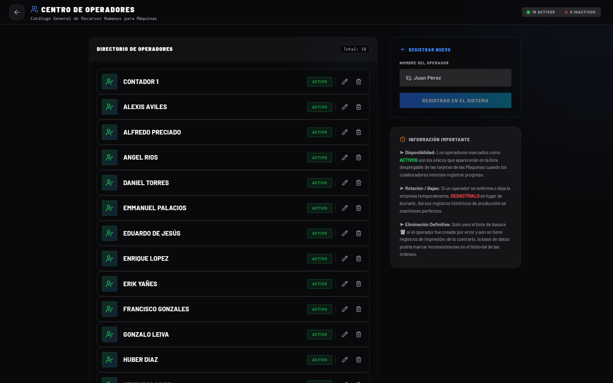
Utilidades
Registrar nuevo operador (Nombre → Registrar en el sistema).
Estado Activo / Inactivo por operador, editar y eliminar.
Nota de Información importante (disponibilidad, rotación/baja, eliminación definitiva).
Admin
15 · Automatizaciones
Motor de reglas inteligentes (disparador → acción), mostradas como tarjetas activables.
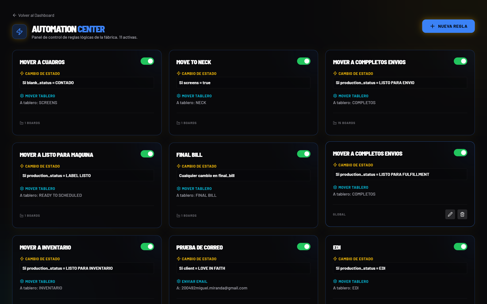
¿Cómo funcionan?
Cada regla tiene una condición CUANDO (cambio de estado / campo) y una acción (Mover a tablero, fijar valor, enviar email…), con interruptor de activación.
Ejemplos reales: "Mover a cuadros", "Move to neck", "Mover a completos envíos", "Final Bill", "Mover a inventario", "Prueba de correo", "EDI".
+ Nueva Regla para crear una automatización.
Admin
16 · Activity Log
Historia completa de una orden: creación, movimientos, cambios de columna, comentarios y más.
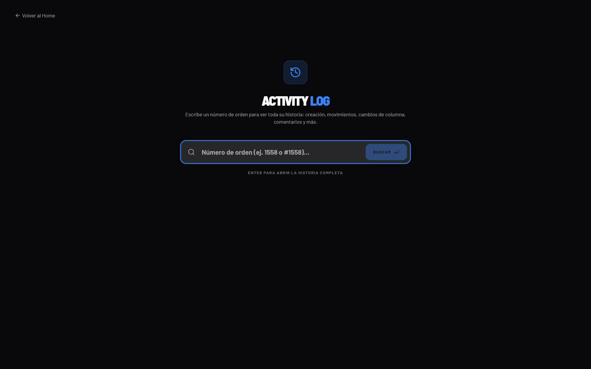
Uso
Escribe el número de orden (p. ej. 1558 o #1558) y presiona Enter / Buscar para abrir su historia completa.
Admin
17 · Reportes Programados
Configura el envío automático del reporte diario de producción por correo.